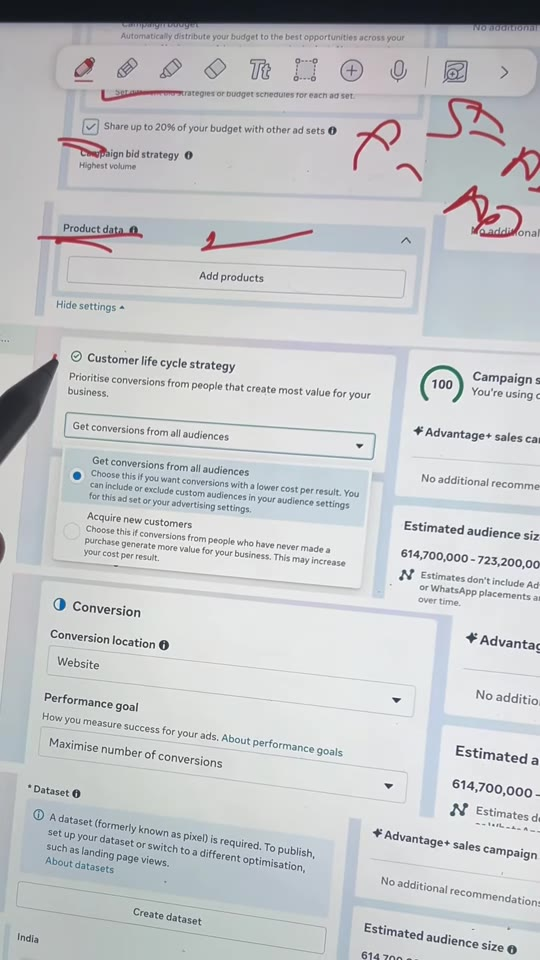
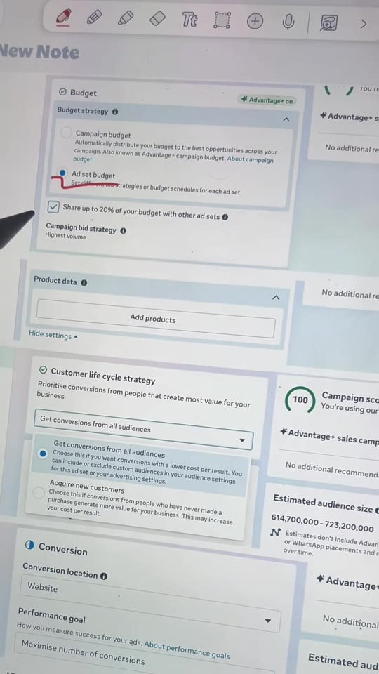
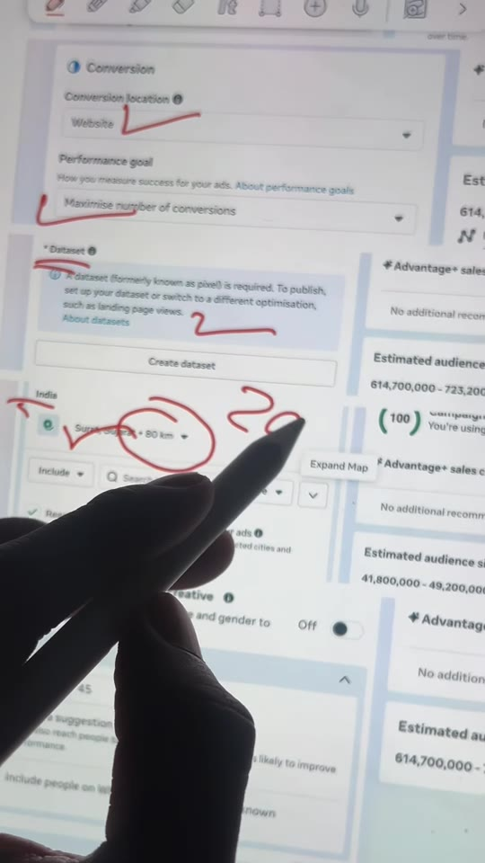
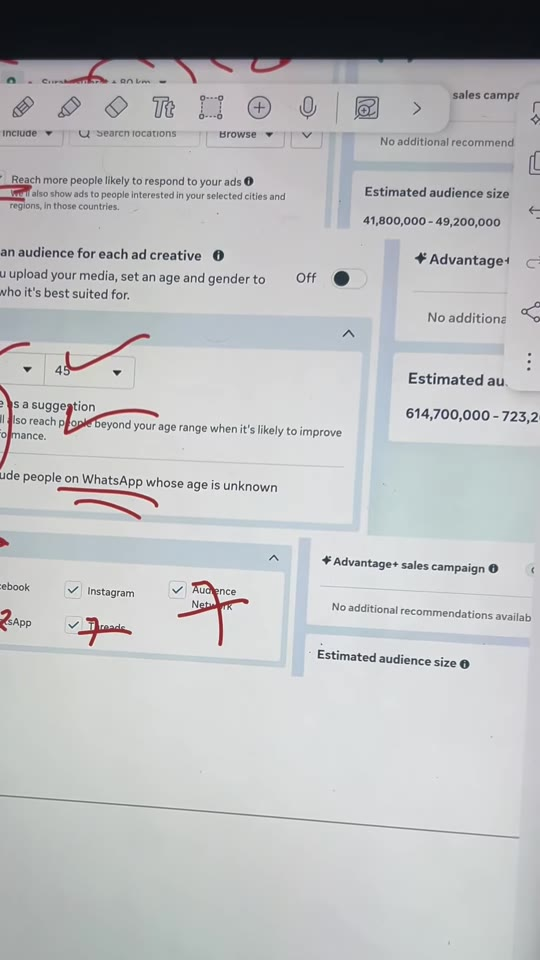

Meta-Ads · Campaign-Structure
Low-Budget Meta Ads Setup: 7 Essential Settings to Fix Zero Sales on ₹500/Day
A granular audit checklist of 7 critical settings in Meta Ads Manager for small ad spends (₹500/day). Solves the common zero-sales / high-CPC trap caused by default Advantage+ algorithmic auto-expansions by switching to Ad Set Budget (ABO), strictly constraining geographic city radius to 20 km, tightening age demographics (23–45), and disabling low-intent network placements (Audience Network, WhatsApp, Threads).

Steps / Workflow
- Force Ad Set Budget (ABO): In Campaign/Ad Set Budget Strategy, select Ad set budget rather than Campaign budget.
- Critical toggle: Uncheck “Share up to 20% of your budget with other ad sets” to prevent Meta from algorithmically siphoning budget away from under-tested ad sets.
- Catalog Product Data: If running e-commerce or catalog ads, upload complete high-resolution product photography under the Product Data panel.
- Customer Lifecycle Strategy: Select Get conversions from all audiences rather than restricting the campaign strictly to new or existing customers.
- Conversion & Performance Goal:
- Set Conversion location to Website.
- Set Performance goal to Maximise number of conversions (Purchase event).
- Under Dataset, test your Pixel firing 2–3 times using the Meta Pixel Helper or Test Events tab before publishing.
- Micro-Geographic Radius Targeting:
- Target 3–4 specific high-performing cities (e.g. Surat, Gujarat) rather than nationwide or broad state levels.
- Manually reduce Meta's default +80 km radius down to +20 km around the urban core.
- Toggle OFF: Uncheck “Reach more people likely to respond to your ads” (Advantage detailed targeting expansion) to eliminate low-intent geographic spillover.
- Demographics & Age Calibration:
- Constrain the target age bracket to 23 to 45 (the primary online purchasing demographic in India).
- Toggle OFF: Uncheck “Use as a suggestion” (prevents Meta from delivering ads outside your age bounds).
- Toggle OFF: Uncheck “Include people on WhatsApp whose age is unknown”.
- Manual Placement Pruning:
- Turn OFF Audience Network (high bot/accidental click rate).
- Turn OFF WhatsApp and Threads placements.
- Keep ON strictly Instagram and Facebook feeds and stories.
Ads Manager Settings Breakdown



Verbatim Breakdown
| Timestamp | Screen / Source | Verbatim Content |
|---|---|---|
00:00 |
On-screen card | Rs 500 daily ad spend? But no sales? ⚠️ |
00:12 |
On-screen UI | Budget strategy • Ad set budget [Uncheck] Share up to 20% of your budget with other ad sets Campaign bid strategy: Highest volume |
00:15 |
On-screen UI | Product data > Add products |
00:27 |
On-screen UI | Customer life cycle strategy Get conversions from all audiences (“Choose this if you want conversions with a lower cost per result.”) |
00:32 |
On-screen UI | Conversion location • Website Performance goal • Maximise number of conversions Dataset • (formerly known as pixel) |
00:41 |
Spoken (audio) | “India ke andar aapko jo bhi 3 se 4 city rehti hai aapki targeting usko rakhna hai, aur yahan pe radius kilometer aapko 20 kar dena hai.” |
00:48 |
On-screen UI | [Uncheck] Reach more people likely to respond to your ads (“We’ll also show ads to people interested in your selected cities and regions, in those countries.”) |
00:53 |
On-screen UI | Age • 23 to 45 [Uncheck] Use as a suggestion [Uncheck] Include people on WhatsApp whose age is unknown |
01:03 |
On-screen UI | Platforms: [X] Facebook [X] Instagram [Uncheck] Audience Network [Uncheck] WhatsApp [Uncheck] Threads |
(caption) |
Post Caption | 500rs daily ad spend ? But no sales ? Comment ad setup for free adsetup #MetaAds #FacebookAdsTips #DigitalMarketingIndia #AdsStrategy #socialmediamarketing High CPC on Facebook ads, Meta ads cost per click, Reduce CPC tips, Facebook ads optimization, Why is my CPC so high, Digital marketing strategy 2026 |
Tools & Features
- Meta Ads Manager (Campaign & Ad Set Level): Desktop configuration interface for conversion campaigns.
- Advantage+ Toggles: Understanding which automated features to deactivate for low-budget testing (Advantage Campaign Budget, Advantage Detailed Targeting, Advantage+ Placements).
- Meta Pixel / Datasets: Conversion API and web pixel verification via Events Manager.
Try This
- Check your current active conversion ad set: if budget is under ₹1,000/day and Advantage Campaign Budget is enabled, switch to Ad Set Budget (ABO) to give each creative clean, isolated spend.
- Open Placements: if set to “Advantage+ placements”, inspect placement breakdown in reporting. If Audience Network spend generated zero purchases, switch to Manual Placements and uncheck Audience Network, WhatsApp, and Threads.
- Verify your city radius: reduce any broad 80 km defaults to 20 km to concentrate impressions within delivery/serviceable range.
Open Questions
- Advantage+ audience vs. Strict targeting: While Meta officially recommends leaving audience expansion and Advantage+ placements on for large accounts (>₹50,000/day spend), accounts with small budgets (≤₹500/day) frequently experience budget dilution across click-farm placements before the algorithm can collect conversion data.